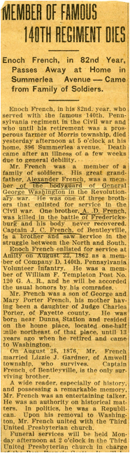

French Family Association
The Official Website of the Surname French
Strichel, Aberdeenshire, Scotland
Chart #26, William French, 1730
Strichel, Aberdeenshire,
Scotland
Dunfermline, Fifeshire,
Scotland
Montgomery, Fayette, and Franklin Counties, PA
North Jackson, Milton Co., OH
This chart updated by Mara French on 9/27/11. Numbers in brackets [ ] show sources and refer to the bibliography at the end of this chart. An asterisk (*) shows continuation of that line. Send any corrections or additions to this chart to marafrench@mindspring.com. Revisions: 2011.
NOTE: Please make any corrections or additions to this chart that you can and send them to Mara. Refer to this chart by chart number and revision date so that your information will be understood. Refer to each family member by their number. Additions are greatly appreciated. This chart has been widely distributed and is constantly being updated. You will be notified of the next revision.
Contents
Early Records of the Surname French in Scotland
Foreword
I’ve researched this line just about all I can from ancestry.com and from the internet. Additions need to come from family members or from local books or historians who haven’t put their information online.
P.S. Although William French is not of my line, I will continue to do research on him as time permits. My line is FFA Chart #6.
History and Background
From the Commemorative Biographical Record of Washington County, Pennsylvania, by J. H. Beers and Co.
ENOCH FRENCH. The French family in Pennsylvania is an old Revolutionary one. Alexander French, the great-grandfather of Enoch (the subject of this sketch), having been a member of Gen. Washington's bodyguard. He resided near Philadelphia, Penn., at the time of his death. A son, Enoch, married a Miss McElroy, of Chambersburgh, Penn., and moved to Fayette county, this State, where he reared a family of children, of whom George French was one. He died in Fayette county.
George French was born March 14, 1799, and in 1823 married Mary Porter, a daughter of Judge Charles Porter, of Fayette county. In 1832 he removed to Morris township, Washington county, and purchased the farm located one-half mile north-east of Dunn's Station, on which his son, Enoch, now resides, where he remained until his death, October 8, 1890, his life embracing a period of fifty-eight years. Mrs. French died in 1839, having become the mother of eight children - five boys and three girls. A.D., the eldest, enlisted in the Eighth Regiment, Pennsylvania Reserves, and was killed at the battle of Fredericksburg; Charles P., a Presbyterian minister of La Salle county, Ill., died February 8, 1870; Washington, born in 1830, died at the age of fourteen years, October 10, 1844; one child died in infancy; Anne A. Miles died in May, 1869; J.C., born October 10, 1836, served in the Fifth West Virginia Cavalry during the Civil war, and is now a prominent citizen of Prosperity, Washington county; Jane resides at Amity, and Enoch in Morris township.
Enoch French, the immediate subject of this sketch, was born where he now resides, June 28, 1834. He received a common-school education and remained with his father, assisting in conducting the farm until the beginning of the late war. On August 22, 1862, he enlisted at Amity in Company D, One Hundred and Fortieth Regiment, P.V.I., and served fourteen months, when he received an honorable discharge and returned home. The failing health of his father rendered it necessary for him to assume the management of the farm. On August 28, 1876, he married Lizzie J. Gardner, a daughter of John Gardner, of Amwell township. Under his management the splendid farm, on which he has worked since boyhood, has been much improved, and is made to yield a good income. Mr. French is a man of much more than ordinary intelligence, is an omnivorous reader, and is possessed of a remarkable memory, whereby he is enabled to give dates and recite events of historical importance with great preciseness. He is an authority on matters of this kind. He is a Republican in politics, though not bitterly partisan.
First Generation
1.1 Charles French, b. ca. 1675-80, m. Margaret Aiken or Aitken on 13 Mar 1701 in Edinburgh, Scotland.
Second Generation
Children of Charles and Margaret (Aiken) French, 1.1
1.2* Alexander French, b. 13 Jun 1703 in Dunfermline, Fife, Scotland, m. Isabell Reidhead on 27 May 1721 in Strichel, Aberdeenshire, Scotland, dau. of John Reidhead and Jean Murray. She was b. 29 Jan 1692 in New Deer, Aberdeen, Scotland.
Third Generation
Children of Alexander and Isabell (Reidhead) French, 2.1
3.1 John French, b. 3 Jun 1722 in Strichel, Aberdeenshire, Scotland.
3.2 Elizabeth French, b. 25 Dec 1726 in Strichel, Aberdeenshire, Scotland.
3.3 Jean French, b. 28 Feb 1728 in Strichel, Aberdeenshire, Scotland.
3.4* William French, b. 21 Jan 1730 in Strichel, Aberdeenshire, Scotland, d. before 1770 at age 40 in Cumberland, PA, m. Martha Denison in 1759 in Abington, Lackawanna Co., PA. She was b. 1744 and d. 1801. Martha was the dau. of Andrew and Sarah Denison.
3.5 Alexander French, b. 1732, was a member of Gen. Washington's bodyguard (George Washington was b. 22 Feb 1732). He resided near Philadelphia, PA, at the time of his death. (Alexander and William could have been combined)
3.6 Robert French, b. 1736.
Fourth Generation
Children of William and Martha (Denison) French, 3.4
4.1* Alexander French, b. 8 May 1758 in Montgomery, Montgomery Co., PA, m. Elizabeth Morrison, and he d. 10 Dec 1833 at Newton Falls, OH.
4.2 Andrew French, b. 19 Aug 1761 in Montgomery, Montgomery Co., PA, d. 16 Aug 1832 in Montgomery, Montgomery Co., PA.
4.3* Enoch French, b. 25 Oct 1767 in Abington, Montgomery Co., PA, d. 17 Oct 1837 in Redstone, Fayette Co., PA, and is buried at the Dunlap Creek Graveyard, near New Salem, PA. He m. Mary McElroy of Chambersburgh, PA, who was b. 1772, d. 1844, having moved to Fayette Co., PA.
4.4 Agnes French, b. 30 Oct 1769 in Montgomery, Montgomery Co., PA.
4.5 Jane French, b. 14 Jun 1770 in Montgomery, Montgomery Co., PA.
Fifth Generation
Children of Alexander and Elizabeth (Morrison) French, 4.1
5.1* James T. or L. French, b. 7 Jan 1822 in Posey Co., IN, d. 11 Mar 1910, m. Esther C. who was b. in 1824 according to the 1860 census of Lynn, Posey Co., IN. In the 1880 census of Lynn, Posey Co., IN, they were living with 4 of their children, 2 of their grandchildren, and 6 laborers, unrelated.
Children of Enoch and Mary (McElroy) French, 4.3
5.2 Elizabeth A. French, b. 9 May 1789 in Green township, Franklin Co., PA, d. 13 Aug 1836 in New Salem, Menalien township, Fayette Co., PA, m. Jacob A. Alleman on 14 Apr 1808.
5.3 Nancy French, b. 1791 in Uniontown, Fayette Co., PA, d. 5 Oct 1834 in Fayette Co., PA, m. Alexander Baird on 11 May 1809.
5.4 Mary French, b. 1794 in Fayette Co., PA, m. David Breeding ca. 1814.
5.5 William French, b. 1795 in Fayette Co., PA, d. 1850 in Gibson Co., IN, m. Mary Breeding ca. 1812.
5.6 Jane Moore or Marie French, b. 1797 in Germantown, Fayette Co., PA, d. 9 Apr 1878 in Germantown, Fayette Co., PA, m. Isaac Core on 23 Mar 1820.
5.7* George French, b. 14 Mar 1799 in Fayette Co., PA, m. 1823 to Mary Porter who was the dau. of Judge Charles Porter of Fayette Co. They m. in Lindley Mills, PA. George d. 1890. In 1832 he removed to Morris township, Washington county, and purchased the farm located one-half mile north-east of Dunn's Station, on which his son, Enoch, now resides, where he remained until his death, October 8, 1890, his life embracing a period of fifty-eight years. Mrs. French died in 1839, having become the mother of eight children - five boys and three girls. A.D., the eldest, enlisted in the Eighth Regiment, Pennsylvania Reserves, and was killed at the battle of Fredericksburg; Charles P., a Presbyterian minister of La Salle county, Ill., died February 8, 1870; Washington, born in 1830, died at the age of fourteen years, October 10, 1844; one child died in infancy; Anne A. Miles died in May, 1869; J.C., born October 10, 1836, served in the Fifth West Virginia Cavalry during the Civil war, and is now a prominent citizen of Prosperity, Washington county; Jane resides at Amity, and Enoch in Morris township.
George is listed in the 1860 census of Morris, Washington Co., PA, living at Lindley’s Mill, with his children Hannah 36, Jane 33, and Enoch 26. George is listed in the 1880 census of Morris, Washington Co., PA, living with his daughter, Jane R. French.
5.8* Enoch French, b. 1801 in Fayette Co., PA, d. Feb 1891 in Van Buren Co., IA. According to the 1772-1890 census of Pennsylvania, Enoch was living in Schuylkill township, Chester Co., PA in 1842, and in Phoenixville, Chester Co., PA in 1857.
5.9 Mary French, 1805 in Fayette Co., PA, d. 29 Jul 1878 in Milton, Rock Co., WI, m. Jonathan Bond ca. 1824.
5.10 Washington French, b. 1808 in Fayette Co., PA.
5.11 Rachel French, b. 29 Jul 1809 in Fayette Co., PA, d. 5 Jul 1877 in Vernon, WI.
Sixth Generation
Children of James T. and Esther C. French, 5.1
6.1 Maria E. French, b. 23 Jan 1844 in IN, d. 26 May 1923 at age 79.
6.2 Margaret T. French, b. 15 Aug 1845 in IN, d. 1930, m. Francis Marion Greathouse and had 5 children: Cora, Grace, George Howard, Bertie, and Horace Elwood.
6.3 William H. French, b. 1847 in Lynn, Posey Co., IN, d. 9 Sep 1932 in Mt. Vernon, Posey, IN at age 85. He m. Clara A. Yunker, who was many years younger, b. 1872, and they were living with William’s brother-in-law, Charles H. Yunker, age 69, in the 1930 census of Mount Vernon, Posey Co., IN.
6.4 Sarah (Sallie) French, b. 1850 in IN, d. 1935 at age 86. She most likely m. a man named Alexander and had children Freddie, b. 1872, and Allie, b. 1874 according to the 1880 census of Lynn, Posey Co., IN.
6.5 Thomas J. French, b. 1852 in IN.
6.6 George S. or H. French, b. 1854 in IN.
6.7 Christopher Columbus French, b. 1857 in IN, d. 1935.
6.8 Louanna French, b. 1860, d. 1945.
6.9 Charles D. French, b. 1864 in IN.
Children of George and Mary (Porter) French, 5.7
6.10 Hannah French, b. 1824 in PA, living with her father in the 1860 census of Morris, Washington Co., PA.
6.11 A. D. French, eldest, enlisted in the Eighth Regiment, Pennsylvania Reserves, and was killed at the battle of Fredericksburg during the Civil War.
6.12 Charles P. French, a Presbyterian minister of La Salle Co., IL, d. 8 Feb 1870.
6.13 Washington French, b. in 1830, died at the age 14, October 10, 1844
6.14 daughter French died in infancy.
6.15 Anne A. French, m. Miles, died in May 1869
6.16 Captain J. C. French, b. 10 Oct 1836, of Bentleyville, enlisted for service in the Civil War, served in the Fifth West Virginia Cavalry during the Civil War, and is now a prominent citizen of Prosperity, Washington County.
6.17 Jane R. French, b. Nov 1827 in PA, resided at Amity, PA. Jane is listed in the 1860, 1870 and 1880 census of Morris, Washington Co., PA, living with her father, George French. In the 1900 census, she is living alone in Amwell, Washington Co., PA, age 72, single.
6.18 Colonel Enoch French, b. 28 Jun 1834 in Morris township, (Washington Co. at that time) Tioga Co., PA, enlisted for service at Amity on 22 Aug 1862 as a member of Company D, 140th Pennsylvania Volunteer Infantry. He m. Lizzie (Eliza) J. Gardner on 28 Aug 1876; she was b. ca. 1838 in PA. She was of Amwell. He received a common-school education and remained with his father, assisting in conducting the farm until the beginning of the late war. On August 22, 1862, he enlisted at Amity in Company D, One Hundred and Fortieth Regiment, P.V.I., and served fourteen months, when he received an honorable discharge and returned home. The failing health of his father rendered it necessary for him to assume the management of the farm. On August 28, 1876, he married Lizzie Jane Gardner, a daughter of John Gardner, of Amwell township. Under his management the splendid farm, on which he has worked since boyhood, has been much improved, and is made to yield a good income. Mr. French is a man of much more than ordinary intelligence, is an omnivorous reader, and is possessed of a remarkable memory, whereby he is enabled to give dates and recite events of historical importance with great preciseness. He is an authority on matters of this kind. He is a Republican in politics, though not bitterly partisan.

In the 1860 and 1870 census of Morris, Washington Co., PA, Enoch is living with his father.
In the 1880 census of Morris, Washington Co., PA, Enoch and Eliza J. French did not have children yet, but living with them was Mary E. French, b. ca. 1851 in PA, Enoch’s sister as it states in the census, but it seems as though she would have a different relationship, which we find out in the next census is his niece. Living next door to them was George M. French, age 81, b. ca. 1799, and his daughter Jane R. French, age 53, b. ca. 1827.
In the 1900 and 1910 census of Morris, Washington Co., PA, Enoch is living with his wife, Eliza Jane, and his niece, Mary Elizabeth French.
Children of Enoch French, 5.8
6.19 Mary Elizabeth French, b. 1851 in PA, living with her uncle George in the 1880, 1900, and 1910 census of Morris, Washington Co., PA, unmarried.
6.20 Charles French.
6.21 Ann M. French.
6.22 Daniel Hartford French, b. 5 Sep 1835 in Medina Co., OH, d. 29 Dec 1924 in Mulberry, Crawford Co., KS. He m. Sarah Ellen Bruce on 6 Jun 1877 in Crawford, KS, the dau. of Charles Edward Bruce and Sarah Macy Simpson. Daniel was buried at the Texas Mission Park South Cemetery in San Antonio, Bexar Co, TX. They had daughters Addie Jeanette French, b. 28 Jun 1883 in Crawford Co., KS, d. 9 Jun 1970 in Corpus Christi, TX, and Alma Loretta French, b. 28 Jun 1883 in Crawford Co., KS, d. Dec 1983 in San Antonio, Bexar Co., TX.
6.23 Samuel French.
6.24 David French.
6.25 Berthina French.
6.26 Allena French.
6.27 Sarah French.
6.28 John C. French, lived in East Cain, Chester Co., PA, in 1857.
Early Records of the Surname French in Scotland
The Commissariot Record of Hamilton and Campsie, Register of Testaments, 1564-1800, edited by Francis J. Grant, W.S., Edinburgh, 1898, http://www.mesarfhc.org/books/Hamilton%20and%20Campsie%20Register%20of%20testaments/942%20B4b%20v%2020%201968.pdf
· Alexander Frenche, m1. Jonet Duncan, in Cadercult, Stirling, Scotland, on 20 Mar 1624. He m2. Marion Reid in Caldercult on 3 Nov 1669.
· French,
Alexander, in Cadercult. See Duncan, Janet ; and Reid, Marion.
· French,
James, in Caddereult, par. of Cadder,
10 Mar. 1614
· French,
James, in Suniesyde, par. of Hamilton, 2 May 1678
· French,
Janet, married Thomas Cleland, in Overtoun on 6 Feb
1616
· French,
Janet, spouse to William Tempill, in Hiltoun, par. of Calder, 15 May 1617
· French, Thomas, in Hiltoun of Calder, 28 Sept. 1666
DNA Testing
Administered by Julia French Wood. For any questions regarding DNA, please email Julia at juliaFWood@aol.com.
A good source for research would be for a male with the
surname French of this line to take the DNA test. It is a simple test that
doesn’t involve blood. A kit is delivered to your house with special brushes
for you to take cheek swabs and the tip is injected into the tiny test tubes to
be returned to the lab. After the tests that you ordered are completed, in about
4 weeks, you will be notified and can log in to your personal page at the
company to view your results and your DNA matches. They may match up with one
of the tests shown here: http://www.familytreedna.com/public/french/default.aspx?section=yresults.
The FamilyTree DNA website gives a special lower
price to those with the surname French. Read about those who approve of it: http://www.familytreedna.com/testimonials.aspx.
To get the discounted price for our French DNA Project group, go to http://small-stuff.com/FRENCH/DNA/ and click at
the left on "Join the French DNA Project" then place your
order. Julia French Wood suggests the 37 marker
test (Y-DNA37), but if you want to start with 25, you can upgrade to a higher
test at a later date if needed.
Bibliography
[1] The Library of Allen Co. OH Historical Society at Lima, OH.
[2] Commemorative Biographical Record of Washington County, Pennsylvania, by J. H. Beers and Co.